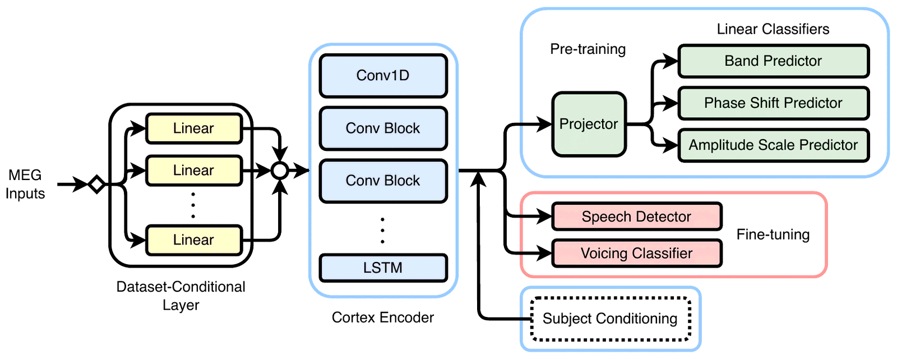

braindecode.models.BBL#
- class braindecode.models.BBL(n_outputs=None, n_chans=None, chs_info=None, n_times=None, input_window_seconds=None, sfreq=None, *, n_sensors=306, n_datasets=4, n_subjects=4096, subject_dim=16, model_dim=512, sensor_kernel_size=3, downsample_kernel_size=3, downsample_stride=2, n_filters=128, ratios=(4, 2, 2), kernel_size=7, last_kernel_size=7, activation=<class 'torch.nn.modules.activation.GELU'>)[source]#
BBL from Jayalath et al. (2025) [bbl].
Foundation Model Convolution Recurrent

Architecture overview with the dataset-conditional layer, the cortex encoder and the pre-training and fine-tuning heads, reproduced from [bbl] (CC BY 4.0).#
Added in version 2.1.
BBL is the MEG encoder of The Brain’s Bitter Lesson, a self-supervised representation for speech decoding from MEG. It is pretrained on CamCAN with three pretext tasks (band, phase and amplitude). The implementation follows the authors’ code,
neural-processing-lab/the-brains-bitter-lessonat commit3965a2be.Architecture Overview
A dataset-conditional convolutional projector, an EnCodec SEANet encoder averaged over time, and a learned subject embedding feed a linear head. With
Bthe batch,C = n_chans,T = n_times,T' = ceil(T / downsample_stride)andT'' = ceil(T' / prod(ratios)):x (B, C, T) -> zero-pad to n_sensors (B, n_sensors, T) -> projector (B, n_datasets * model_dim, T') -> dataset gate (B, model_dim, T') -> SEANetEncoder (B, model_dim, T'') -> mean over time (B, model_dim) -> concat subject embedding (B, model_dim + subject_dim) -> final_layer (B, n_outputs)
Macro Components
BBL.projectorOperations.
Conv1d(n_sensors, n_datasets * model_dim, sensor_kernel_size) -> activation -> Conv1d(downsample_kernel_size, stride downsample_stride); the one-hotdataset_indexkeeps onemodel_dimslice. Role. Harmonizes sensor layouts across datasets.BBL.encoderOperations.
SEANetEncoder(residual convolutions, downsampling byprod(ratios), two-layer LSTM). Role. Self-supervised backbone (band, phase and amplitude pretext tasks in the paper).BBL.subject_embeddingOperations.
Embedding(n_subjects, subject_dim)concatenated to the pooled features. Role. Subject conditioning: one learned vector per subject, so that the head can account for what varies between subjects (Section 3.1 of the paper).BBL.final_layerOperations.
Linear(model_dim + subject_dim, n_outputs), the paper’s linear probe. Role. The task head, as in the authors’Prober; it is not pretrained.
Temporal, Spatial, and Spectral Encoding
Temporal: strided convolutions and the LSTM, then a mean over time.
Spatial: the projector mixes all (zero-padded) sensors.
Spectral: learned by the band and phase pretext tasks.
Additional Mechanisms
Dataset gate:
dataset_indexpicks one projector slice (slot 0 by default).subject_indexis offset per dataset slot: subjectsof slotduses rowd * 1024 + s.Subject fallback: without
subject_index, the mean embedding of the rows flagged in thetrained_subjectsbuffer (the paper’s novel-subject fallback). Only CamCAN’s rows are trained and flagged in the release; set the buffer to the rows of your own training before relying on it.Temporal mask:
temporal_maskhides raw time samples before any convolution or LSTM, andreturn_featuresaddstemporal_features, the encoder output before pooling.
Pretrained Weights
braindecode/bbl-pretrained(revision5a19a369) holds the authors’ CamCAN checkpoint (slot 0); the head is not pretrained:from braindecode.models import BBL model = BBL.from_pretrained("braindecode/bbl-pretrained", n_outputs=2)
The checkpoint takes its 306 Elekta
MEG*channels in FIF order, band-passed 0.1-125 Hz with 50 and 100 Hz notches, then resampled to 250 Hz (Section 4.1 of the paper), on 0.5 s windows (125 samples). Each window is scaled per channel by the recording’s median and IQR, clipped to[-5, 5]and first 0.5 s mean-subtracted, so inputs are dimensionless (authors’data/preprocess.pyanddata/utils.py;forwardonly does the zero-padding to 306 sensors). The paper’s bad-channel interpolation is not in the authors’ code. On the same inputs, the features and the gradients equal those of the authors’Backbonewith these weights; the mean-subject fallback differs by float32 rounding only (#1553).- Parameters:
n_outputs (int) – Number of outputs of the model. This is the number of classes in the case of classification.
n_chans (int) – Number of EEG channels.
chs_info (list of dict) – Information about each individual EEG channel. This should be filled with
info["chs"]. Refer tomne.Infofor more details.n_times (int) – Number of time samples of the input window.
input_window_seconds (float) – Length of the input window in seconds.
sfreq (float) – Sampling frequency of the EEG recordings.
n_sensors (
int) – Sensor slots of the projector; inputs with fewer channels are zero-padded, as the reference collator does (306: Elekta MEG).n_datasets (
int) – Dataset slots of the projector gate.n_subjects (
int) – Rows of the subject embedding (the release: 1024 per dataset slot).subject_dim (
int) – Subject embedding dimension.model_dim (
int) – Projector and encoder output dimension.sensor_kernel_size (
int) – Kernel size of the projector’s first convolution (3 in the release); odd, so that its paddingsensor_kernel_size // 2keeps the length.downsample_kernel_size (
int) – Kernel size of the projector’s strided convolution (3 in the release); odd, padded bydownsample_kernel_size // 2.downsample_stride (
int) – Stride of that convolution, so the projector outputsceil(n_times / downsample_stride)steps (2 in the release).n_filters (
int) – Channels after the first SEANet convolution.kernel_size (
int) – Kernel size of the first SEANet convolution.last_kernel_size (
int) – Kernel size of the last SEANet convolution.activation (
type[Module]) – Activation of the projector (the SEANet keeps EnCodec’s ELU).
- Raises:
ValueError – If some input signal-related parameters are not specified: and can not be inferred.
Notes
If some input signal-related parameters are not specified, there will be an attempt to infer them from the other parameters.
References
[bbl] (1,2)Jayalath, D., Landau, G., Shillingford, B., Woolrich, M., Parker Jones, O. (2025). The Brain’s Bitter Lesson: Scaling Speech Decoding With Self-Supervised Learning. ICML 2025. https://arxiv.org/abs/2406.04328
Hugging Face Hub integration
When the optional
huggingface_hubpackage is installed, all models automatically gain the ability to be pushed to and loaded from the Hugging Face Hub. Install with:pip install braindecode[hub]
Pushing a model to the Hub:
from braindecode.models import BBL # Train your model model = BBL(n_chans=22, n_outputs=4, n_times=1000) # ... training code ... # Push to the Hub; ``datasets`` and ``base_model`` go to the card model.push_to_hub( repo_id="username/my-bbl-model", commit_message="Initial model upload", model_card_kwargs={"datasets": ["BNCI2014_001"]}, )
Loading a model from the Hub:
from braindecode.models import BBL # Load pretrained model model = BBL.from_pretrained("username/my-bbl-model") # Data the weights were trained on, from the Hub model card print(model.card_data.datasets if model.card_data else None) # Load with a different number of outputs (head is rebuilt automatically) model = BBL.from_pretrained("username/my-bbl-model", n_outputs=4)
Extracting features and replacing the head:
import torch x = torch.randn(1, model.n_chans, model.n_times) # Extract encoder features and a mean-pooled 2-D embedding out = model(x, return_features=True) embedding = out["embedding"] # (batch, dim) features = out["features"] # Replace the classification head model.reset_head(n_outputs=10)
Note that
torch.jit.scriptreturns features only on models whoseforwarddeclaresreturn_features.Saving and restoring full configuration:
import json config = model.get_config() # all __init__ params with open("config.json", "w") as f: json.dump(config, f) model2 = BBL.from_config(config) # reconstruct (no weights)
All model parameters (both EEG-specific and model-specific such as dropout rates, activation functions, number of filters) are automatically saved to the Hub and restored when loading.
See Loading and Adapting Pretrained Foundation Models for a complete tutorial.
Methods
- forward(x, subject_index=None, dataset_index=None, return_features=False, ch_mask=None, temporal_mask=None)[source]#
Classify
xof shape(batch, n_chans, n_times).subject_indexanddataset_indexare(batch,)integer tensors;dataset_indexdefaults to slot 0.ch_maskis an optional(batch, n_chans)mask of real channels, seecheck_ch_mask(): padded channels are set to zero, the empty sensor slots of the reference collator, so a recording padded in a batch gives its output alone. The projector mixes every sensor slot into each feature, so the model has no per-channeltokens. Shorter recordings occupy the first sensor slots; interior missing sensors must retain their original slots.temporal_maskis an optional boolean(batch, n_times)mask: True hides a raw time sample on every channel, unlikech_maskwhere True means real. Hidden samples (including NaNs) become zero before any convolution or LSTM and receive no input gradient. All-hidden windows are allowed. Keep clean targets and mask sampling downstream; this is input corruption, not the paper’s band/amp/phase objectives.return_features=Truereturns"features"(batch, model_dim + subject_dim),"cls_token"(None) and"temporal_features", the encoder output before pooling,(batch, model_dim, n_steps)withn_steps = ceil(n_times / (downsample_stride * prod(ratios))). The steps are not independent receptive fields: the LSTM carries prefix context and the noncausal/reflect convolutions mix neighboring samples.- Parameters:
- Return type: